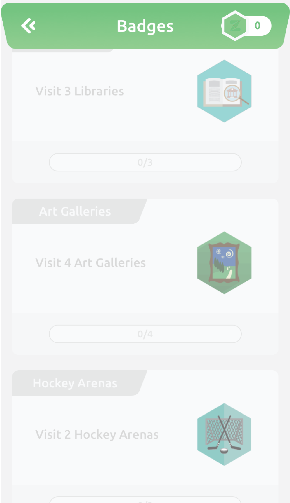
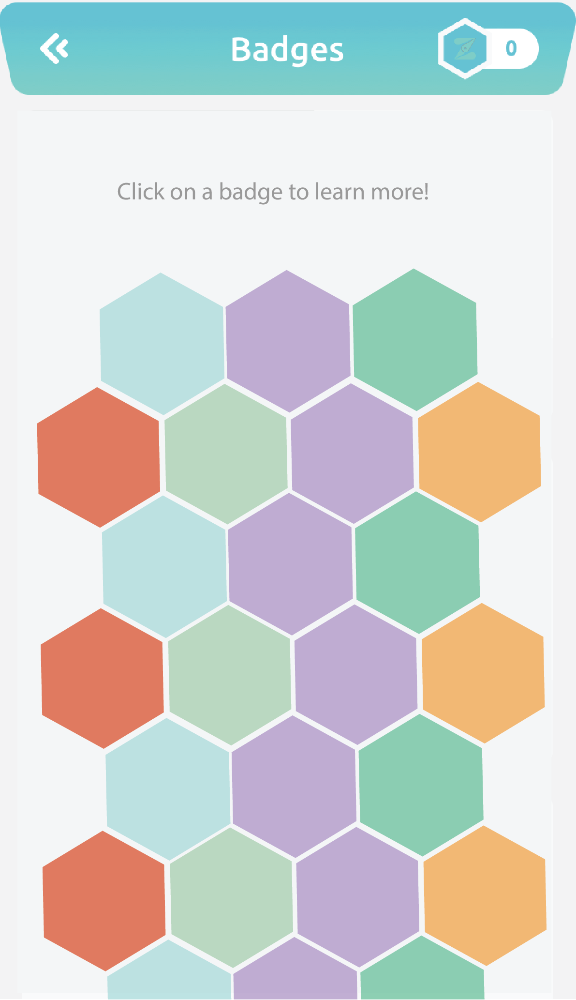
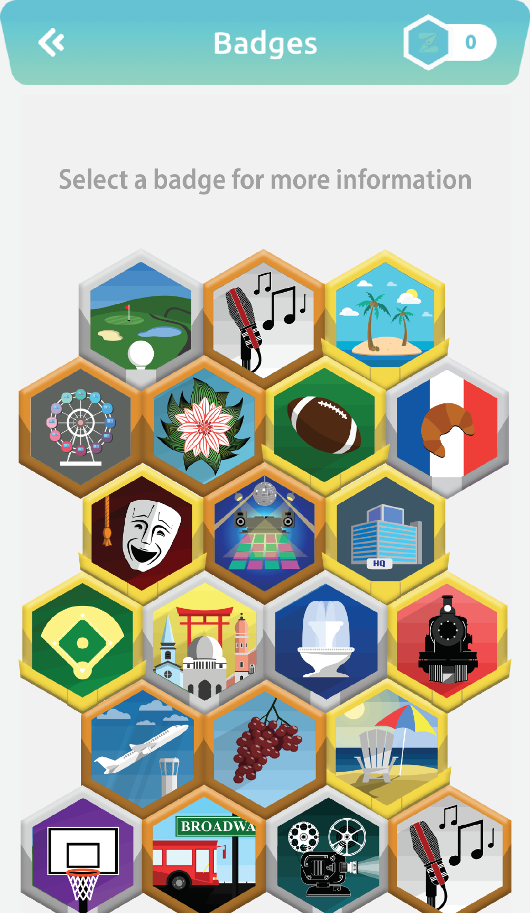

This is the current version of Zonder's badges screen before any retouching. Some user issues with this layout are: Lots of vertical whitespace = wasting space - Over 20 badges means lots of scrolling - Tracking progress of bottom badges difficult - Titles for each badge are redundant - The images, however, tell a good story. Their hexagonal shape made me think of a beehive. This is what inspired me to create a "honeycomb" redesign of this page.

My first iteration of the honeycomb idea is shown left. Making it in this layout, I had a goal to fit all the badges on the screen at once; after showing this design to Zonder's CEO, I was told we need to make room for future badge additions. But we were getting closer. From here, we decided on adding the following to the next iteration: Use their Figma assets to create bronze, silver, and gold badges - Go larger and do 3 or maybe 4 badges wide - Allow for vertical scrolling to see more badges.

3x4 design is motivated by allowing the user to achieve Gold Badge Streaks. Here, the user has a gold badge streak of 5. The user could achieve a gold badge streak of 8 by achieving a gold badge instead of a bronze badge on row #2 with the flower on it. Or they could instead achieve a gold badge streak of 9 by achieving 2 gold badges on row #5.

Zonder's CEO was happy with this as a final design and gave it to his team to code and design from this mock-up created in Adobe Illustrator. The final major change was to enlarge the badge which is currently selected, with a small drop shadow to create a slight 3D effect.